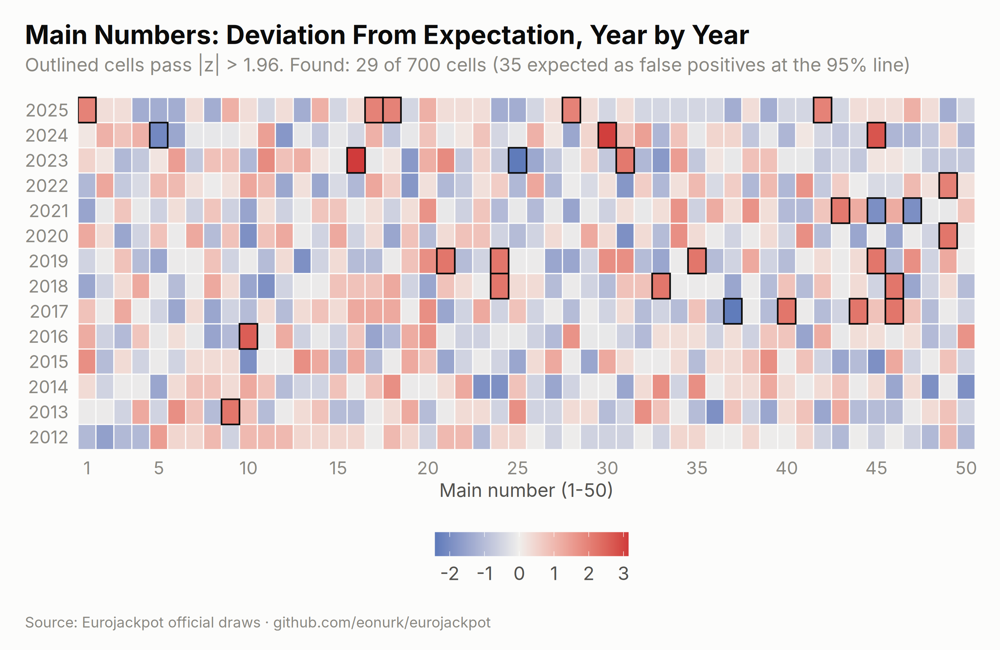
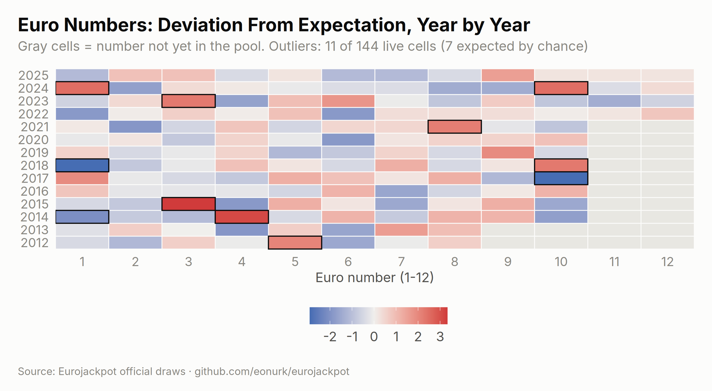
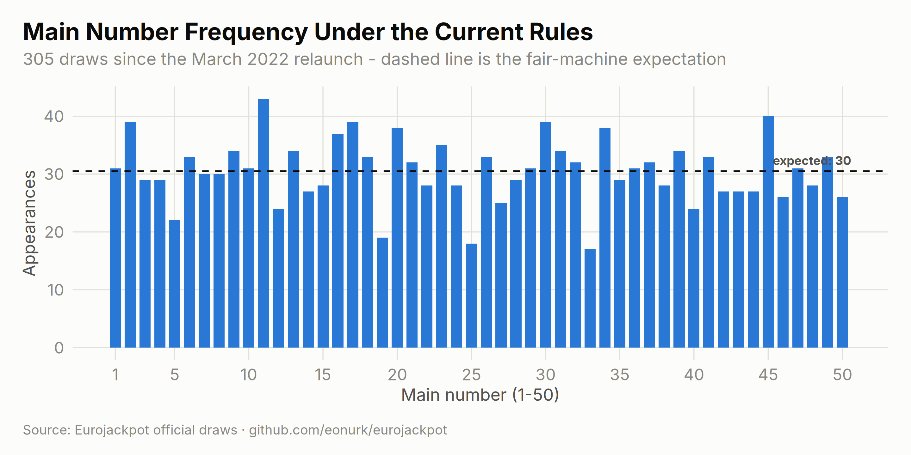
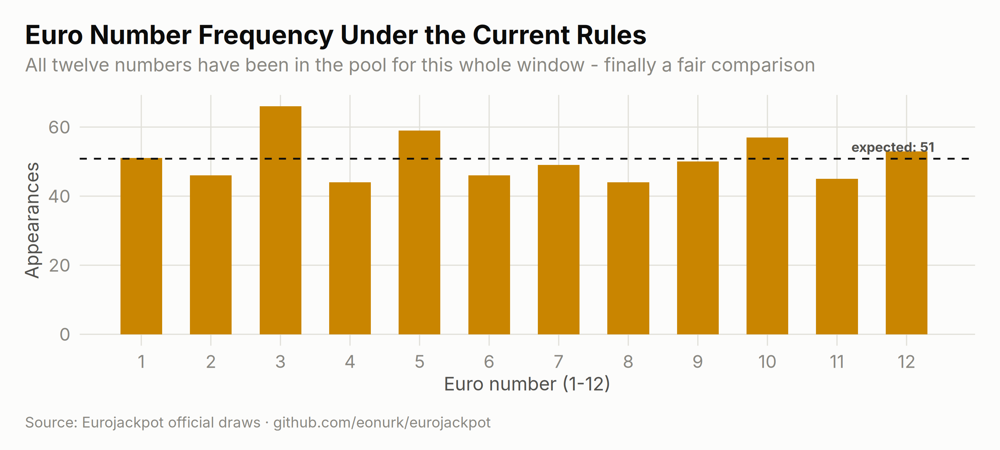

Every lottery fan has a lucky number, and every lucky number has a track record. This chapter counts how often each ball actually came out of the machine, year by year — then asks the only question that matters: is any of the unevenness bigger than pure chance would produce? We standardise every count into a z-score (how many standard deviations a number sits from its fair-machine expectation) and light up the cells that cross the conventional ±1.96 “significance” line.
Instead of fourteen stacked bar charts, one picture: each cell is a number’s deviation from expectation in one year. Blue means “came up less than expected”, red means “more”, and outlined cells cross the 95% significance line.
main_z <- results %>%
select(year, all_of(paste0("main_", 1:5))) %>%
pivot_longer(-year, values_to = "number") %>%
count(year, number, name = "frequency") %>%
complete(year, number = 1:50, fill = list(frequency = 0)) %>%
group_by(year) %>%
mutate(
draws = sum(frequency) / 5,
expected = draws * 5 / 50,
z_score = (frequency - expected) / sqrt(draws * 0.1 * 0.9),
is_outlier = abs(z_score) > 1.96
) %>%
ungroup()
n_out_main <- sum(main_z$is_outlier)
ggplot(main_z, aes(x = number, y = year, fill = z_score)) +
geom_tile(color = ej_surface, linewidth = 0.4) +
geom_tile(
data = filter(main_z, is_outlier),
color = ej_ink, linewidth = 0.55
) +
scale_fill_gradient2(
low = ej_blue_dark, mid = "#f0efec", high = ej_red,
name = "z-score"
) +
scale_x_continuous(breaks = c(1, seq(5, 50, by = 5)), expand = c(0, 0)) +
labs(
title = "Main Numbers: Deviation From Expectation, Year by Year",
subtitle = sprintf(
"Outlined cells pass |z| > 1.96. Found: %d of %d cells (%.0f expected as false positives at the 95%% line)",
n_out_main, nrow(main_z), 0.05 * nrow(main_z)
),
x = "Main number (1-50)", y = NULL, caption = ej_caption
) +
theme(panel.grid.major = element_blank(), legend.key.width = unit(28, "pt"))
# For euro numbers the expectation must respect the pool changes:
# 9-10 exist only since Oct 2014, 11-12 since Mar 2022. Cells where a number
# was never in the pool are blanked instead of being scored as "cold".
euro_cells <- expand.grid(
year = sort(unique(results$year)), number = 1:12,
stringsAsFactors = FALSE
)
euro_stats <- mapply(function(y, x) {
sel <- results$year == y & results$pool_size >= x
p <- 2 / results$pool_size[sel]
c(expected = sum(p), variance = sum(p * (1 - p)), exposure = sum(sel))
}, euro_cells$year, euro_cells$number)
euro_cells <- cbind(euro_cells, t(euro_stats))
euro_obs_year <- results %>%
select(year, euro_1, euro_2) %>%
pivot_longer(-year, values_to = "number") %>%
count(year, number, name = "frequency")
euro_z <- euro_cells %>%
left_join(euro_obs_year, by = c("year", "number")) %>%
mutate(
frequency = coalesce(frequency, 0L),
z_score = ifelse(exposure > 0, (frequency - expected) / sqrt(variance), NA),
is_outlier = !is.na(z_score) & abs(z_score) > 1.96
)
n_out_euro <- sum(euro_z$is_outlier)
n_cells_euro <- sum(euro_z$exposure > 0)
ggplot(euro_z, aes(x = number, y = year, fill = z_score)) +
geom_tile(color = ej_surface, linewidth = 0.4) +
geom_tile(
data = filter(euro_z, is_outlier),
color = ej_ink, linewidth = 0.55
) +
scale_fill_gradient2(
low = ej_blue_dark, mid = "#f0efec", high = ej_red,
name = "z-score", na.value = "#e8e7e2"
) +
scale_x_continuous(breaks = 1:12, expand = c(0, 0)) +
labs(
title = "Euro Numbers: Deviation From Expectation, Year by Year",
subtitle = sprintf(
"Gray cells = number not yet in the pool. Outliers: %d of %d live cells (%.0f expected by chance)",
n_out_euro, n_cells_euro, 0.05 * n_cells_euro
),
x = "Euro number (1-12)", y = NULL, caption = ej_caption
) +
theme(panel.grid.major = element_blank(), legend.key.width = unit(28, "pt"))
main_outliers_summary <- main_z %>%
filter(is_outlier) %>%
arrange(desc(abs(z_score))) %>%
head(10) %>%
transmute(
Year = year, `Main number` = number, Appearances = frequency,
Expected = round(expected, 1), `z-score` = round(z_score, 2)
)
knitr::kable(main_outliers_summary,
caption = "The ten loudest single-year deviations - every one of them ordinary sampling noise",
align = c("c", "c", "r", "r", "r")
)| Year | Main number | Appearances | Expected | z-score |
|---|---|---|---|---|
| 2023 | 16 | 20 | 10.4 | 3.14 |
| 2024 | 30 | 20 | 10.5 | 3.09 |
| 2024 | 45 | 19 | 10.5 | 2.77 |
| 2016 | 10 | 11 | 5.3 | 2.61 |
| 2023 | 25 | 3 | 10.4 | -2.42 |
| 2017 | 37 | 0 | 5.2 | -2.40 |
| 2013 | 9 | 10 | 5.2 | 2.22 |
| 2017 | 40 | 10 | 5.2 | 2.22 |
| 2017 | 44 | 10 | 5.2 | 2.22 |
| 2017 | 46 | 10 | 5.2 | 2.22 |
The game’s format changed in March 2022, so for a “who’s hot right now” table the honest window is the current-rules era only. Here is every number’s record since then:
current <- results %>% filter(draw_date >= as.Date("2022-03-29"))
n_cur <- nrow(current)
main_cur <- tabulate(as.integer(as.matrix(current[, paste0("main_", 1:5)])), nbins = 50)
expected_cur <- 5 * n_cur / 50
ggplot(data.frame(number = 1:50, frequency = main_cur), aes(number, frequency)) +
geom_col(fill = ej_blue, width = 0.75) +
geom_hline(yintercept = expected_cur, linetype = "dashed", color = ej_ink, linewidth = 0.6) +
annotate("text",
x = 50.6, y = expected_cur, label = sprintf("expected: %.0f", expected_cur),
hjust = 1, vjust = -0.7, size = 3.4, color = ej_ink2, fontface = "bold"
) +
scale_x_continuous(breaks = c(1, seq(5, 50, by = 5))) +
labs(
title = "Main Number Frequency Under the Current Rules",
subtitle = sprintf("%d draws since the March 2022 relaunch - dashed line is the fair-machine expectation", n_cur),
x = "Main number (1-50)", y = "Appearances", caption = ej_caption
)
euro_cur <- tabulate(c(current$euro_1, current$euro_2), nbins = 12)
expected_euro_cur <- 2 * n_cur / 12
ggplot(data.frame(number = 1:12, frequency = euro_cur), aes(number, frequency)) +
geom_col(fill = ej_gold, width = 0.6) +
geom_hline(yintercept = expected_euro_cur, linetype = "dashed", color = ej_ink, linewidth = 0.6) +
annotate("text",
x = 12.4, y = expected_euro_cur, label = sprintf("expected: %.0f", expected_euro_cur),
hjust = 1, vjust = -0.7, size = 3.4, color = ej_ink2, fontface = "bold"
) +
scale_x_continuous(breaks = 1:12) +
labs(
title = "Euro Number Frequency Under the Current Rules",
subtitle = "All twelve numbers have been in the pool for this whole window - finally a fair comparison",
x = "Euro number (1-12)", y = "Appearances", caption = ej_caption
)
top5 <- order(-main_cur)[1:5]
bottom5 <- order(main_cur)[1:5]
knitr::kable(
data.frame(
Rank = 1:5,
`Hottest main` = top5, Appearances = main_cur[top5],
`Coldest main` = bottom5, `Appearances ` = main_cur[bottom5],
check.names = FALSE
),
caption = sprintf("Main-number extremes since March 2022 (expected: %.0f each)", expected_cur),
align = rep("c", 5)
)| Rank | Hottest main | Appearances | Coldest main | Appearances |
|---|---|---|---|---|
| 1 | 11 | 43 | 33 | 17 |
| 2 | 45 | 40 | 25 | 18 |
| 3 | 2 | 39 | 19 | 19 |
| 4 | 17 | 39 | 5 | 22 |
| 5 | 30 | 39 | 12 | 24 |
knitr::kable(
data.frame(
`Euro number` = order(-euro_cur),
Appearances = euro_cur[order(-euro_cur)],
`vs expected` = sprintf("%+d", euro_cur[order(-euro_cur)] - round(expected_euro_cur)),
check.names = FALSE
),
caption = sprintf("All twelve euro numbers since March 2022 (expected: %.0f each)", expected_euro_cur),
align = c("c", "r", "r")
)| Euro number | Appearances | vs expected |
|---|---|---|
| 3 | 66 | +15 |
| 5 | 59 | +8 |
| 10 | 57 | +6 |
| 12 | 53 | +2 |
| 1 | 51 | +0 |
| 9 | 50 | -1 |
| 7 | 49 | -2 |
| 2 | 46 | -5 |
| 6 | 46 | -5 |
| 11 | 45 | -6 |
| 4 | 44 | -7 |
| 8 | 44 | -7 |
What to take away: the gap between the hottest and coldest number is precisely chance-sized — the formal chi-squared test in Chapter 5 gives p = 0.98, and the outlined heatmap cells above appear at almost exactly the false-positive rate the 95% line predicts. Frequency tables are fun history. They are not a forecast.